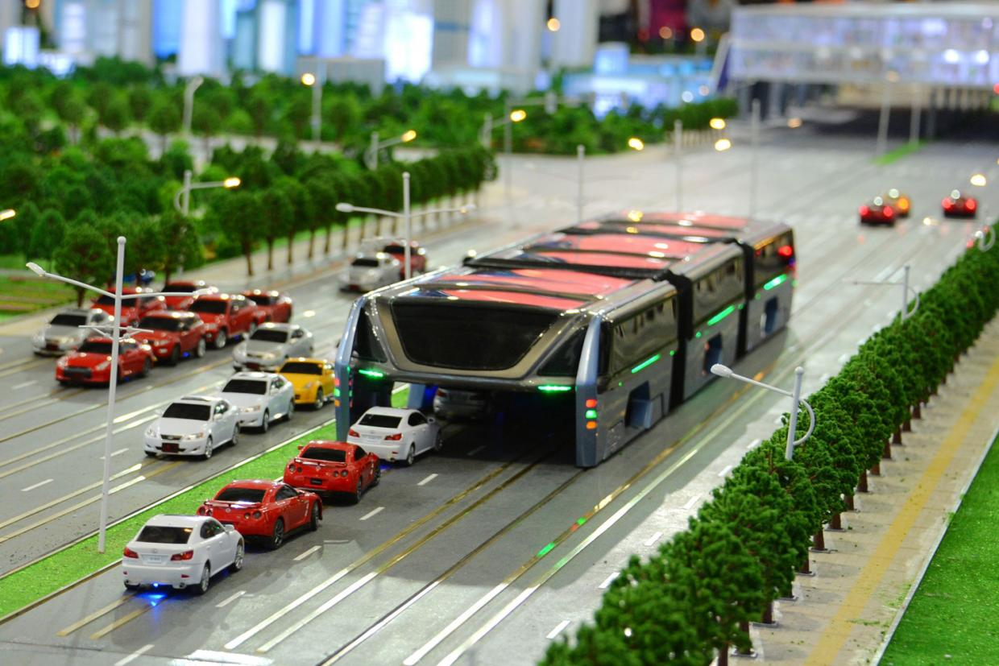
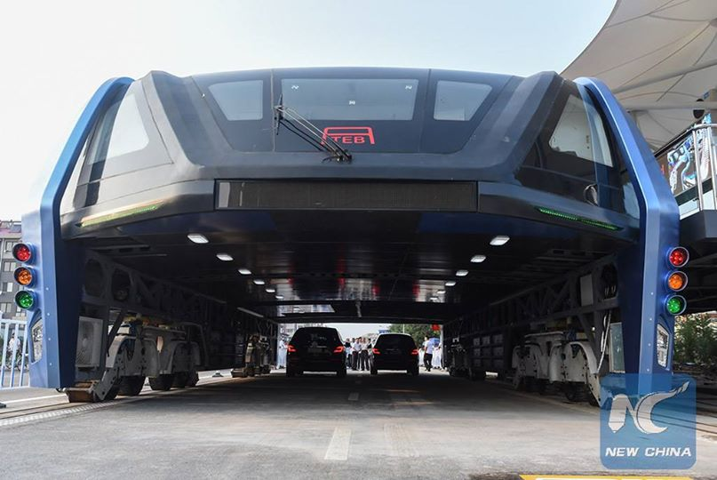
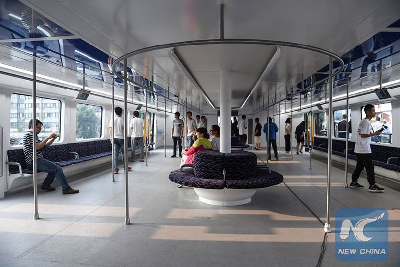
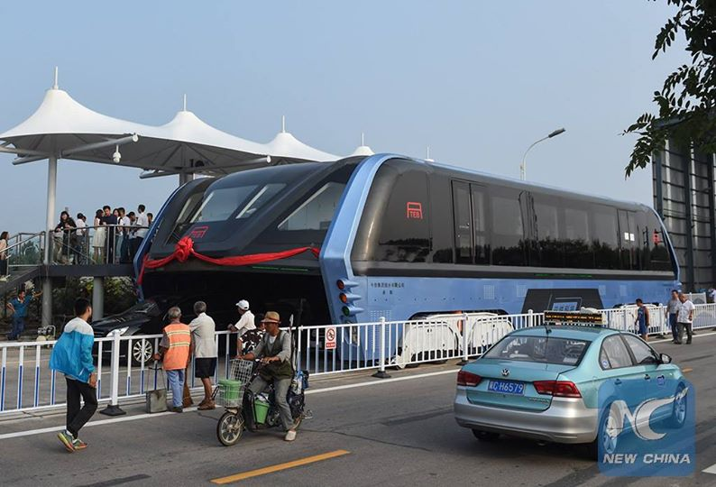

China meluncurkan bus anti macet
Awal Agustus 2016, pemerintah china mengumumkan telah berhasil mewujudkan konsep dari "straddling bus" yang pertama kali desainnya diperkenalkan ke publik pada bulan Mei 2016 dalam event China Beijing International High-Tech Expo.
Tidak main-main, bus ini memang didesain khusus sebagai solusi dari permasalahan klasik yang ada di cina, yaitu kemacetan. Kemacetan di China diklaim telah merugikan China sebesar lebih dari 300 juta Yuan per harinya. Saat konsep ini diperkenalkan, pemerintah china langsung mengeluarkan dana investasi untuk mewujudkan bus canggih yang kemudian diberi nama Transit-Elevated Bus (TEB)-1.
Bis yang diklaim mampu menampung lebih dari 1200 orang dalam satu rangkaian ini memiliki dimensi (21 x 8 x 2.1) meter tiap bis. Sehingga bis ini mampu melaju dengan mulus di atas mobil yang memiliki tinggi di bawah 2 meter.
Untuk menjawab permasalahan bahan bakar (yang pastinya akan merepotkan jika bis ini harus belok ke pom bensin), engineer dari tim pengembangan TEB-1, menjelaskan bahwa bus ini menggunakan motor elektrik sebagai mesin utamanya. Pada beberapa pemberhentian, akan dipasang charger khusus yang berguna untuk mengisi daya baterai mesin bis, sehingga bis bisa kembali beroperasi tanpa hambatan.
Simulasi Transit-Elevated Bus (TEB)-1
Keren ya? Semoga aja pengembangan prototype TEB-1 berjalan dengan baik sehingga "straddling bus"ini dapat segera turun ke jalan raya dan memecahkan masalah kemacetan di berbagai negara.